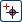
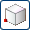
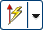
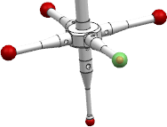
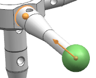
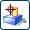
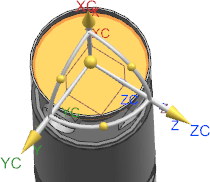
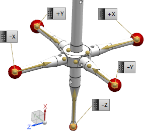

Define remaining tracking points
In this activity, you will define tracking points, stem vectors, and top face locations for the remaining four styli.
Add tracking points for each of the four remaining styli by doing the following.
-
In the Probe dialog box, on the Tracking tab, click Add New Set .
Tip
Expand the set list to better see upcoming styli tracking definitions.
-
Accept the default tracking point Name and in the Tracking Point group, click Select Tracking Point .
-
Select the face of the next probe tip to be defined.
-
In the Probe dialog box, in the Tracking Point group, in the Stem subgroup, click the Specify Vector list, and then select Two Points .
-
If it is not already selected, from the Selection bar above the Inspection Navigator, from the selection filter list, select No Selection Filter, and from the selection scope list, select Entire Assembly.
-
Click Vector Dialog .
-
In the graphics window, click the outer sphere face.

-
In the Vector dialog box, select Specify To Point and from the vector options list , select Arc / Ellipse / Sphere Center
 .
.
-
Closer to the point where the stylus connects with the probe hub, select another arc center.
The tracking point vector is points toward its connection.

-
Click OK.
-
Click Select Top Face  and then click the location where the probe tool will mount with the probe head device.

-
In the Name box, type the direction that the stylus will point when used with CMM inspection setup files.
Current direction
Inspection setup direction
-Z
+X
+Z
-X
-Y
-Y
+Y
+Y
When all tips are defined, they should appear similar to the graphic below.

Tracking points for all five probe styli are now defined. Leave the Probe dialog box open for the next activity.